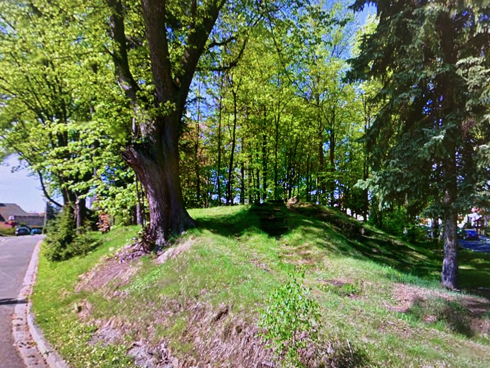

Ulice Pod Lipami v Bruntále není zastavěná ani sto let a spolu s domy tam ve 20. letech minulého století vznikl i park. Když jej město před několika měsíci revitalizovalo, na informační tabuli připomnělo i skutečnost, že podle dobových pramenů právě tam, při staré cestě z Bruntálu do Olomouce, přicházeli o život zločinci. Bohužel ale i přes několik pokusů o nález archeologických důkazu, není jasné zda tady opravdu šibenice stála.
